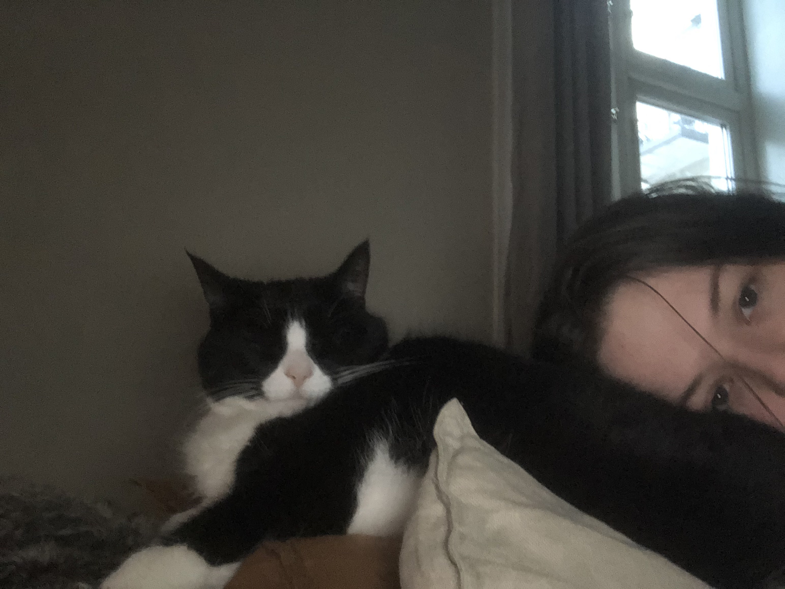

Fiona Den Vakre Katten

Dette er Fiona. Hun ligger på sofaen, og sover. Hun er en veldig stor svart og hvit katt, med verdens fineste øyne.
Fiona Den Vakre Katten er en katt som har gjort mye i løpet av livet sitt. Hun har:
- ødelagt to sofaer
- spist mye mat
- slått rekord i antall sovet av en katt